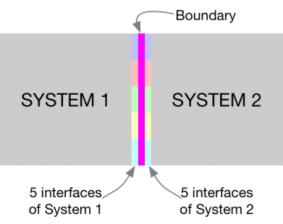
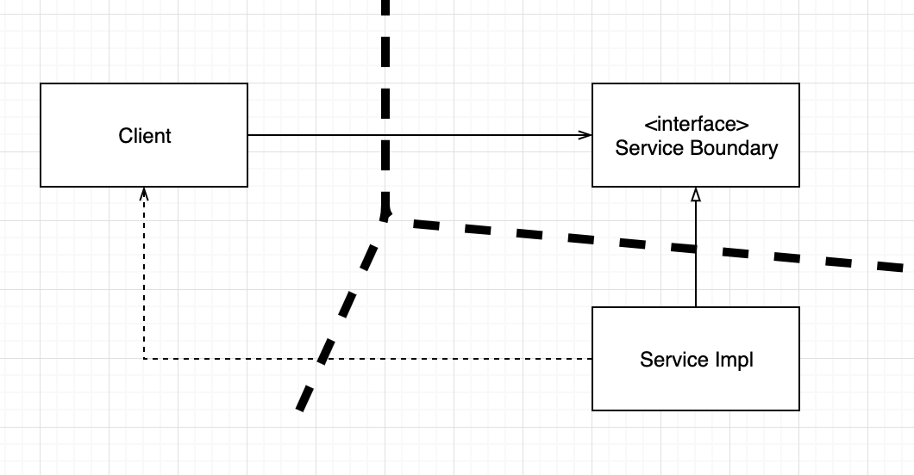
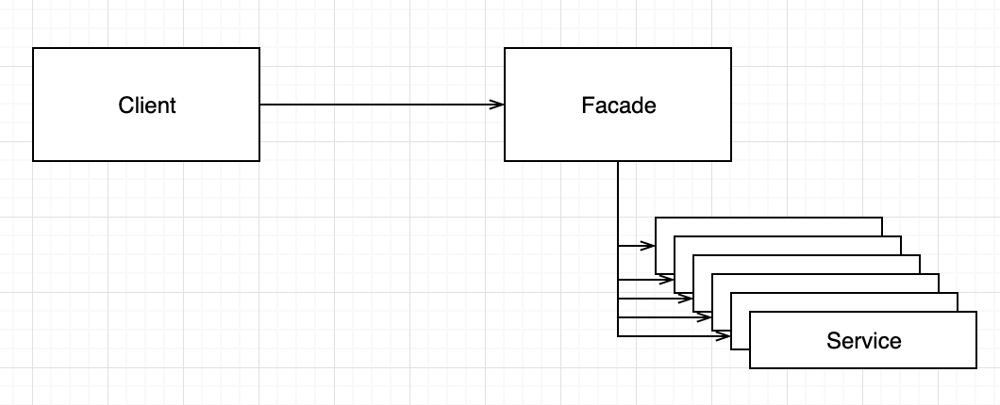

“CleanArchitecture 24장”
쌍방향 다형적 인터페이스

- InputBoundary와 OutputBoundary 같은 쌍방향 인터페이스가 필요
- Input , Output 을 위한 데이터 구조
- 독립적으로 컴파일 하고 배포 할 수 있는 컴포넌트를 위한 의존성 관리
YAGNI
- You Aren’t Going to Need it
- 필요한 작업만 해라
그래도 필요하다고 생각된다면?
부분적 경계
마지막 단계 건너뛰기
부분적 경계를 생성하는 방법중 하나
독립적으로 컴파일 하고 배포할 수있는 컴포넌트를 만들기 위한 작업을 모두 수행한 후, 단일 컴포넌트에 모아두기
- 쌍방향 인터페이스, 입/출력 데이터 구조
완벽한 경계를 만들 때 만큼의 코드량과 사전 설계가 필요하지만 다수의 컴포넌트를 관리하는 작업은 하지 않아도 된다.
일차원 경계
- 완벽한 형태의 아키텍처 경계는 양방향으로 격리된 상태로 유지되야 함 -> 쌍방향 boundary 인터페이스 사용 -> 초기 설정, 유지비용 UP

전략 (Strategy) 패턴
– 완벽한 형태의 경계로 확장할 수 있는 공간을 확보하고자 할 때 사용
– Client 를 ServiceImpl 로 부터 격리시키는데 의존성 역전이 사용쌍방향 인터페이스가 없음
퍼사드

- 의존성 역전을 희생
- 경계는 Facade 클래스로만 간단히 정의
- Facede 클래스에 모든 서비스 클래스를 메서드 형태로 정의
- 서비스 호출 시 해당 서비스 클래스로 호출을 전달
- 클라이언트는 서비스 클래스에 직접 접근 할 수 없음
- Client 가 모든 서비스 클래스에 대해 추이 종속성을 가짐 (추이 종속성 : A->B, B->C, A->C)
- 서비스 클래스 중 하나의 소스 코드 변경 시 Client 는 무조건 재컴파일
결론
아키텍처 경계가 언제, 어디에 존재해야 할지, 그리고 그 경계를 완벽하게 구현할지 아니면 부분적으로 구현할지를 결정하는 일 또한 아키텍트의 역할이다.